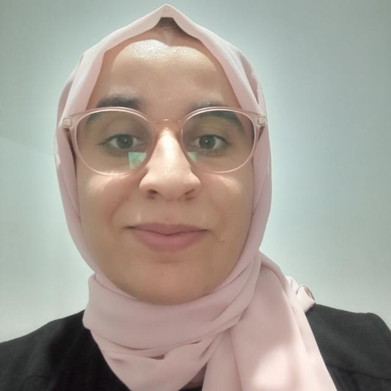

PhD in Computer Science and Communication
Phone: (+216) 56 623 890 | (+49) 15224712131
Address: Bachgasse 14, 78464 Konstanz, Germany
Email: Nejiines1997@gmail.com | ines.nej@uni-konstanz.de
LinkedIn |
GitHub |
LeetCode |
Kaggle |
Scholar |
ORCID
Welcome! I'm a researcher and developer specializing in AI-driven Digital Twins for smart agriculture, machine learning, and full-stack development.
University of Konstanz, Germany | June 2025 – Present
Iselm Retail Company | Dec 2021 – June 2025
Faculty of Science - University of Gabes | Sept 2023 – June 2025
National Engineering School - University of Gabes | 2022 – 2025
Faculty of Science - University of Gabes | 2019 – 2022
Faculty of Science - University of Gabes | 2016 – 2019
Technical High School of Medenine | 2015 – 2016
Freelance Project | January 2024 – July 2024
Implemented a purpose-driven Android application aimed at supporting individuals with health concerns by providing real-time air quality monitoring.
Used Technology: Tensorflow, Keras, OpenCV, and Numpy.
Freelance Project | May 2023 – Sept 2023
Implemented an E-commerce and Inventory Management System using Flask and Python. Designed and integrated essential features such as product listings, shopping cart functionality, order processing, and inventory management.
Used Technology: Python, Flask, Javascript, and Postgresql.
Freelance Project | July 2022 – May 2023
Implemented an intelligent method to detect diseases that occur on plant leaves in real time using an optimized version of You Only Look Once and Convolution Neural Network models.
Used Technology: Tensorflow, Keras, OpenCV, and Numpy.
Freelance Project | July 2022 – March 2023
Design and implement a multimodal approach for recognizing the base eight emotions in input video streaming using a Convolution Neural Network and features selection and fusion.
Used Technology: Tensorflow, Keras, OpenCV, and Numpy.
My Master's Project | Mar 2021 – Dec 2021
Design and implement an intelligent approach to identify date palm varieties by classifying both fruit and leaves images using a Convolution Neural Network.
Used Technology: Tensorflow, Keras, OpenCV, and Numpy.
Dr. Ridha Ejbali, Full Professor
Faculty of Sciences, University of Gabes, Tunisia.
Phone: +216 97 156 023
Email: Ridha_ejbali@ieee.org